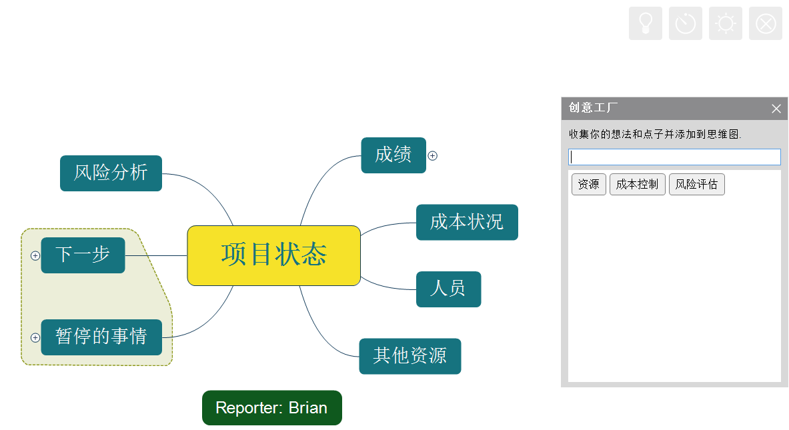
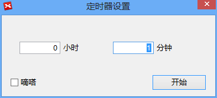

头脑风暴
XMind能帮助您更简洁快速地进入头脑风暴模式，产生新的创意。
头脑风暴的目标是获得尽可能多的设想,追求数量是它的首要任务。因此我们引入创意工厂以便您可以更快捷地记录和收集您的创意。计时器能帮助您控制您头脑风暴会议的时间。此外，您还可以在白天和夜间模式间自由切换。
头脑风暴编辑器当进入头脑风暴模式时，会出现一个全屏编辑器。此时您能更好地专注于您的想法，毫无杂念地记录您的灵感和想法。
* 点击 "视图 - 头脑风暴"/按 "F5" 进入思维导图模式。
我们重新设计的头脑风暴功能使得您可以更有效地产生好的创意。在编辑视图的右上角有四个选项帮助您更好的使用头脑风暴功能。
创意工厂创意工厂是个浮动对话框，以帮助您快速记录您的创意。您可以先记录您的创意在创意工厂里面，然后即可直接拖拽到思维图。
- 点击右上角的创意工厂图标
- 输入您的创意并按"Enter"键
- 拖拽创意到您的思维图
注意:
- 您记录在创意工厂对话框中的创意会被保留。
- 选择创意并按"Delete"可删除创意工厂中的创意。
- 按"Ctrl+Z"可撤销上述操作。
在头脑风暴会议之前您可设定此次头脑风暴的持续时间。
- 点击右上角的"计时器"图标
- 在接下来的对话框设置时间和嘀嗒提示音 
- 移动鼠标到计时器可选择暂停计时器或关闭提示音效果。
您可自由选择在白天和黑夜模式进行切换。
- 点击右上角的太阳图标进入黑夜模式
- 点击右上角的月亮图标进入白天模式
退出
点击退出图标退出头脑风暴模式
您可能还对下列内容感兴趣: